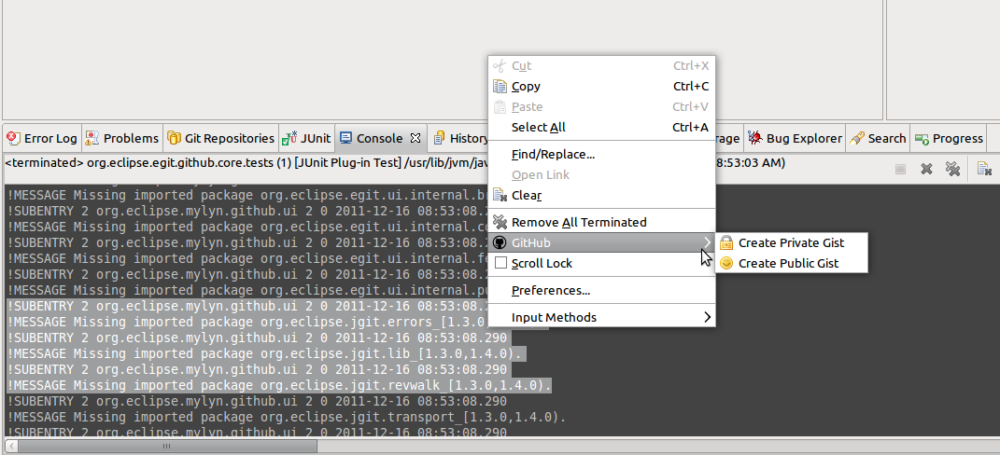

| EGit 1.2 New and Noteworthy | ||
|---|---|---|
|
|
||
| Bugs Closed | ||
EGit can now move and rename projects within a repository for a number of cases. Moving a project to a subdirectory does not work and since Eclipse actually destroys the project, we simply forbid it for now (Platform bug 307140). The bug is only worked around in Eclipse 3.7, i.e. forbidden in the UI.
When the new preference Team > Git Projects > Auto share project located in a git repository is enabled projects which are located in the working tree of a git repository are automatically shared with the Git team provider when the project is imported into the workspace.
You can stage only part of file and save it in git index. Also reverting selected hunk of code (from git index to working tree and from HEAD to working tree) is supported. For more detailed description you can watch this example movie
The Pull command now also works if resources are selected from more than one repository.
In the Git Repositories view, there is a new Properties action in the context menu, which will open a configuration dialog allowing to edit the Repository Configuration. Here, key value pairs can be added, changed or deleted. The Open button allows to open the Repository Configuration file in a text editor.
On a tag, you may now click Delete Tag to delete a tag.
Files can now be opened by dragging them from the Working Directory to the Editor Area.
The new Preference Preferences > Team > Git > Views > Follow Renames allows to toggle whether renames of a selected resource should be followed in the History View, if the "Resource" filter is used. This preference can also be configured from the History View's menu Show > Follow Renames
In the commit graph area, there is a new context menu action "Delete Branch" allowing to delete a branch. It will be enabled if a branch exists for the currently selected commit, which is not checked out. If there is a single branch on this commit, which is not checked out, this action will delete this branch immediately. If multiple such branches exist, a dialog will be shown asking which branches should be deleted. If commits become unreachable on "Delete Branch" a confirmation dialog will be shown to prevent accidental unreachability of commits.
In the revision details area, there is a new context menu action Show Annotations. On selected files it will open the file in a (read-only) editor and display an annotation ruler with commit and author information ("blame annotations") for each line in a file.
A reflog entry now additionally shows the timestamp of the reflog entry and the short message of the associated commit.
The new context menu action Checkout will checkout the selected commit and the HEAD will become detached. The new action Open in Commit Viewer will open the commit matching the reflog entry, the same action can be triggered by double-clicking the reflog entry.
A new Checkout button allows to check out the commit displayed in the commit viewer. The HEAD pointer will become detached.
A new Cherry-Pick button allows to cherry-pick the displayed commit. This applies the change introduced by the displayed commit on top of the currently checked out commit or branch.

|
|
||
| Bugs Closed |